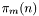
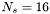
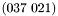
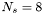
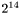
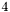

Interleave Division Multiple Access with turbo multiuser detection
The Interleave Division Multiple Access (IDMA) system shown below uses encoders (ENC) at emitter side, followed by interleavers (), different for each user. The encoder can be a scrambler of length  or a NSC code (generator polynomials ) followed by a scrambler (). After interleaving, a Zero Padding technique is used in order to eliminate the interference between adjacent blocks of chips (permuted coded bits). The block length is defined by the interleaver length (). The chips are BPSK modulated and send into multipath channels ( multipaths). The channels are different for each user and have real, Rayleigh distributed, attenuations. The sum of all emitted signals is received and the received signal is affected by an Additive White Gaussian Noise (AWGN).

IDMA system model

Turbo multi-user receiver for IDMA systems
Below the performance of the IDMA systems is shown in two different configurations: using only a scrambler at each user side and using a NSC code followed by a scrambler. In both cases the performance is limited by the performance of a mono-user transmission in an AWGN channel.

Performance of the IDMA system with scrambler and using the simplified GCD for 8 users

Performance of the IDMA system with NSC code followed by a scrambler and using the simplified GCD for 5 users
 . Thus it can be seen the iterative exchange of informations between the two SISO modules.
. Thus it can be seen the iterative exchange of informations between the two SISO modules.

EXIT diagram of the turbo multi-user receiver
Reference: L. Liu and L. Ping, ''Iterative detection of chip interleaved CDMA systems in multipath channels,`` Electronics letters, vol. 40, pp. 884-886, July 2004.